How to Route Messages Using a Switch Statement
This tutorial walks you through how to use Anypoint Studio to build a "Hello, World" application that switches, or routes, messages according to their content. The application uses the Choice Router to execute Mule code based on conditions, similar to a switch statement in a conventional programming language. After creating and running the example in this tutorial locally, you should be able to apply what you have learned to create more complex applications.
Prerequisites
In the Basic Studio Tutorial, you can get to know Anypoint Studio and build a simple "Hello, World" application.
This tutorial assumes that you have downloaded and installed Anypoint Studio. If you do not have any previous experience with Eclipse or an Eclipse-based IDE, please review the brief introduction to the Anypoint Studio interface or complete the Basic Studio Tutorial.
Goals
In this tutorial, your goals are to:
-
Create an application in Anypoint Studio that routes messages according to the logic you supply in a Choice Router.
-
Set and invoke flow variables using Mule Expression Language.
-
Run the application on a local runtime embedded in Anypoint Studio.
-
Test the application using a browser.
-
Adjust the application while it is running, effectively invoking a "hot deployment."
-
Edit the application to move some processing into a Subflow.
-
(Optional) Apply your knowledge to an extra credit challenge.
Modeling a Flow with Choice Routing
Launch Anypoint Studio and create a new Mule Project named CBR Tutorial. If you need more directions on launching Studio and creating a project, refer to the Basic Studio Tutorial.
Next, use the building blocks in the Studio palette to model an application that:
-
Receives an HTTP request
-
Filters out any "favicon.ico" browser requests
-
Transforms an inbound property into a flow variable
-
Routes the message according to the flow variable associated with the message
-
Sets a new payload based on the routing logic
-
Supplies that payload as an HTTP response
-
Logs a summary of the results to the console
You can create this application by searching for and dragging these building blocks to the Canvas in Studio:
Allows your Mule application to connect to Web resources through the HTTP or HTTPS protocol. |
|
Expression Filter |
Filters messages according to a Mule expression. |
Sets a flow variable on the message that can be invoked elsewhere in the flow. |
|
Routes incoming messages according to configured logic. |
|
Modifies your payload into a different message, depending on the results of the choice routing. |
|
Logs messages or activity based on the value of a Mule expression. |
Drag the building blocks to the Canvas and rename them as shown:
Visually Modeling the Choice Router
Dragging and dropping within the choice scope requires some precise positioning. Here are the detailed step-by-step instructions for modeling the choice router.
-
First, drop the appropriate message processors into the Default box on the canvas.
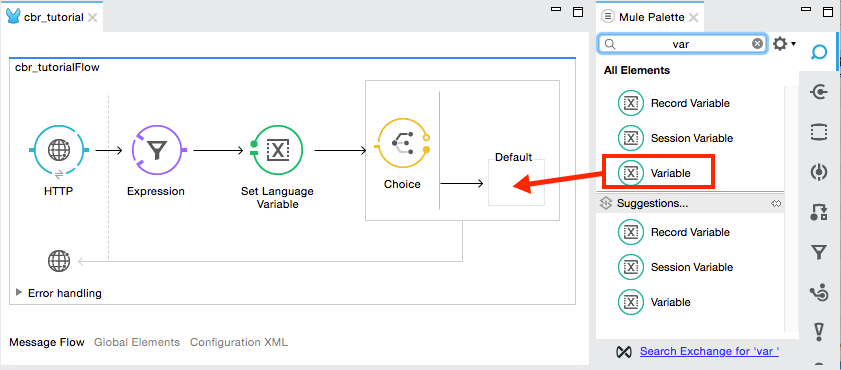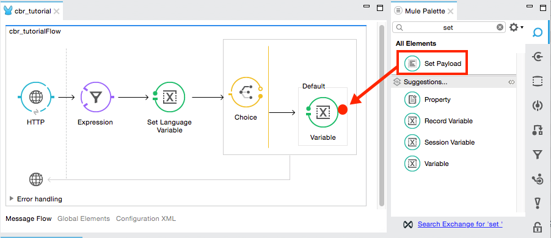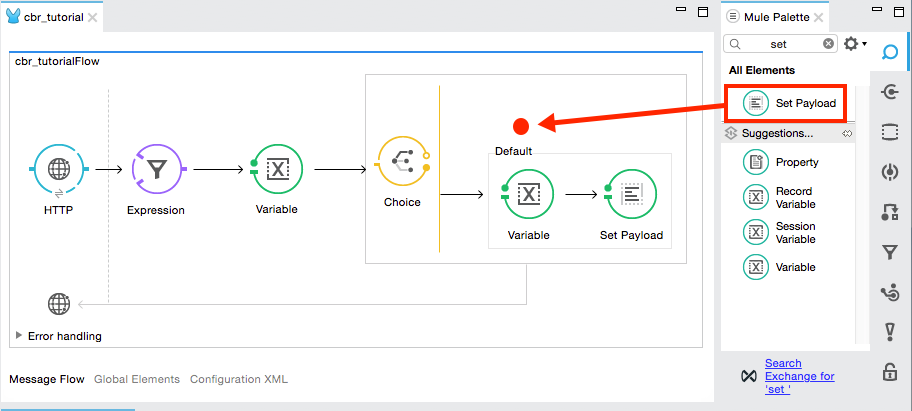 -
Then, drag another message processor into that same space, positioning your mouse so that you see the black vertical line that indicates you are creating another choice.
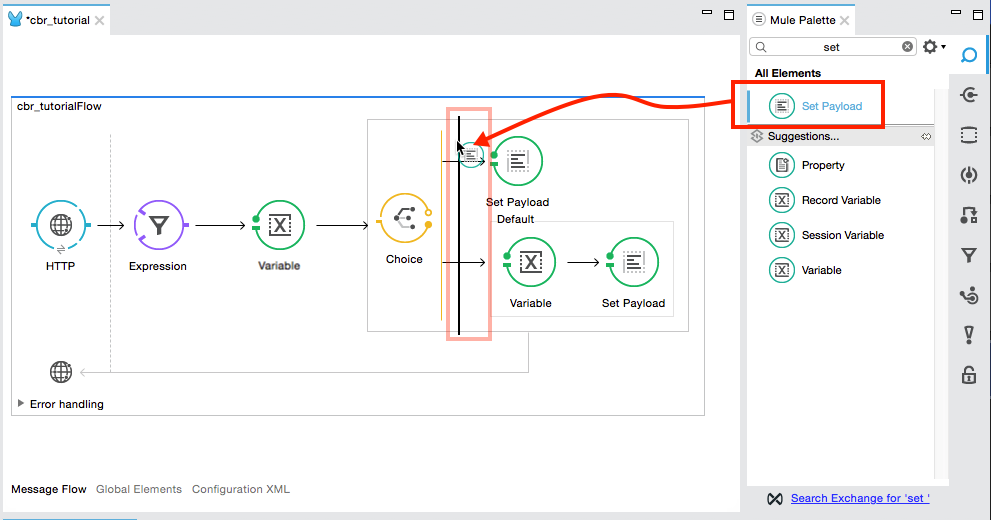 -
Your choice router should now match the image shown.
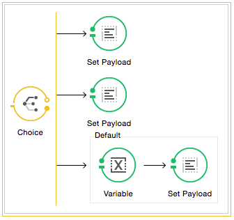 -
Add the Logger after the Choice block.
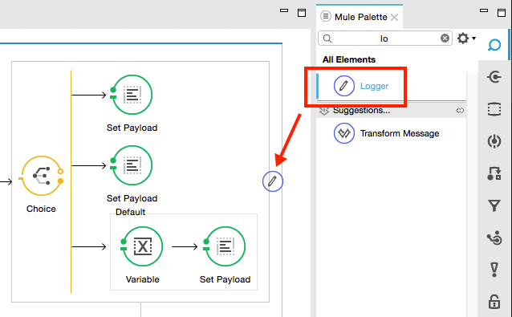
With just a few clicks, you have created a full application on the Studio canvas.
After you configure the individual elements within a flow, which you do in the next section, the flow accomplishes the goals that you set out to achieve with this application. Each building block that you select and place on the canvas becomes part of the functionality of your application, as shown in the image below.
Configuring the Flow Elements
Next, configure the flow elements to make the application respond to you in a few different languages based on a query parameter you pass in the URL when you invoke the inbound endpoint. For example, if you invoke http://localhost:8081/?language=French, the application should respond to you in French.
Nearly all Mule elements provide configuration options, which you can set in one of two ways:
-
Using the building block Properties Editor in the console of Studio’s visual editor
-
Using XML code in Studio’s XML editor, or in any other XML editing environment.
| The following instructions walk you through how to configure each building block in the visual editor and via XML. Use the tabs to switch back and forth between the instructions for the visual editor and the XML editor. |
HTTP Connector
Studio Visual Editor
-
Click the HTTP building block in your flow to open its Properties Editor. For this element to work, you must reference an abstract element called a Connector Configuration, which contains several of the high level necessary configuration properties. One single Connector Configuration element can be referenced by as many HTTP connectors as you like. Create a new Conector Configuration element by clicking the plus sign next to the Connector Configuration field.
-
A new window opens. Fill in the two required fields: Host and Port. Set
localhostas the host and leave the default value8081as the port: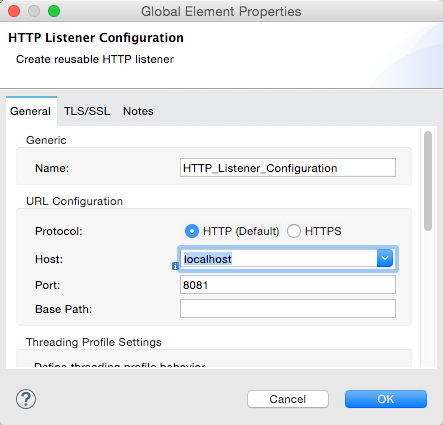Field Value Name
HTTP_Listener_ConfigurationHost
localhostPort
8081
-
Click Ok to close this dialogue. Notice how the Connector Configuration field now contains a reference to the HTTP_Listener_Configuration element. You can edit the Global Element Properties further by clicking the
editicon. Click the HTTP Connector in the Canvas and the error notification indicator disappears.
XML Editor or Standalone
Configure the HTTP connector as follows:
<http:listener config-ref="HTTP_Listener_Configuration" path="/" doc:name="HTTP"/>| Attribute | Value |
|---|---|
config-ref |
|
path |
|
doc:name |
|
For this element to work, you must reference an abstract element called a Connector Configuration, which contains several of the high level necessary configuration properties. One single Connector Configuration element can be referenced by as many HTTP connectors as you like. The config-ref field in the connector references a configuration element named HTTP_Listener_Configuration. You must now create a configuration element that matches the name that the connector is referencing. Configure this element as follows:
<http:listener-config name="HTTP_Listener_Configuration" host="localhost" port="8081" doc:name="HTTP Listener Configuration"/>| Attribute | Value |
|---|---|
name |
|
host |
|
port |
|
doc:name |
|
Expression Filter
The expression filter tells Mule to check that the payload is not equal to the string '/favicon.ico'. If the expression evaluates to true, Mule passes the message on to the next step in the flow. If the expression evaluates to false, Mule stops processing the message.
Studio Visual Editor
Click the Expression Filter building block on the Canvas to open its Properties Editor, and set the Expression as:
#[message.inboundProperties.'http.request.uri' != '/favicon.ico']
| Notice that when you start typing a value in the expression field, a menu displays all of the available options, saving you from having to remember the exact names as you type them in. |
XML Editor or Standalone
Configure the expression filter as follows:
<expression-filter expression="#[message.inboundProperties.'http.request.uri' != '/favicon.ico']" doc:name="Expression"/>| Attribute | Value |
|---|---|
expression |
|
doc:name |
|
Variable Transformer
This transformer instructs Mule to look for an inbound property called language on all incoming messages, and, if found, set it (and its value) as a flow variable — metadata that is carried along with the message in the form of a key/value pair.
Studio Visual Editor
Click the Variable Transformer to open its Properties Editor, then configure as per the table below.
| Field | Value |
|---|---|
Display Name |
|
Operation |
|
Name |
|
Value |
|
| Notice that when you start typing a value into the value field, a menu displays all of the available options, saving you from having to remember the exact names as you type them in. |
XML Editor or Standalone
If you model the flow on the canvas, then switch to the XML editor, the placeholder XML for this element looks like the following code:
<variable-transformer doc:name="Variable"/>Change the variable-transformer placeholder element to the element set-variable , then configure the set-variable transformer as follows:
<set-variable variableName="language" value="#[message.inboundProperties.'http.query.params'.language]" doc:name="Set Language Variable"/>| Field | Value |
|---|---|
variableName |
|
value |
|
doc:name |
|
Choice Router and Constituent Message Processors
Studio Visual Editor
-
Click the Choice Router building block to open its Properties Editor. Here, enter Mule expressions to define the routing logic that Mule applies to incoming messages (see table below; detailed instructions follow).
When Route Message to #[flowVars.language == 'Spanish']Set Payload#[flowVars.language == 'French']Set PayloadDefaultVariable -
In the table, click the first empty row under When, then enter
#[flowVars.language == 'Spanish'] -
This expression tells Mule to look for a flow variable called
languageon the incoming message and check whether it equals Spanish. If this expression evaluates to true, Mule routes the message to the message processor in that path. -
Click the next empty row, then enter
#[flowVars.language == 'French']Just as in the previous row, this expression tells Mule to look for a flow variable called
languageon the incoming message. This time, the expression indicates Mule should check whetherlanguageequals French. If this expression evaluates to true, Mule routes the message to the message processor in that path.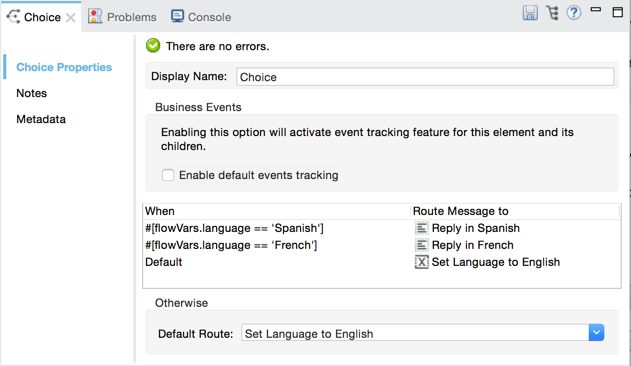 -
Next, click the topmost Set Payload building block within your Choice Router scope to open its Properties Editor, then configure it as shown below so that the Display Name is set to Reply in Spanish and the Value is Hola!:
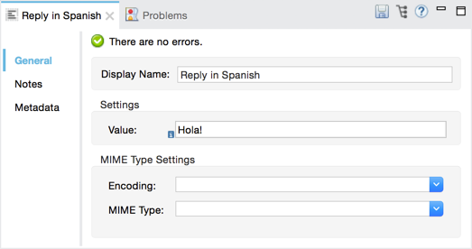This Set Payload transformer corresponds to the first option you configured above in your choice routing logic. If Mule finds the flow variable
language=Spanish, your message produces this payload as a response. -
Click the next Set Payload building block within the Choice Router scope to open its Properties Editor, then configure it as shown below so that the Display Name is set to Reply in French and the value is Bonjour!:
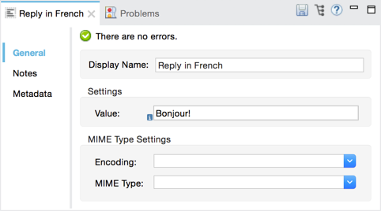This Set Payload transformer corresponds to the second option you configured above in your choice routing logic. If Mule finds the flow variable
language=French, your message produces this payload as a response. -
Click the Variable Transformer inside the Default box to open its Properties Editor, then configure it as shown so that the Display Name is Set Language to English, the Name is language, and the Value is English:
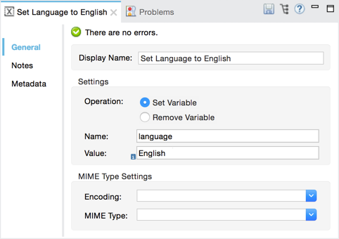This Variable Transformer, and the Set Payload that follows it, are only invoked if neither of the expressions in the choice routing logic evaluate to true. Thus, if Mule does not find either the flow variable
language=Spanishor the flow variablelanguage=French, Mule routes the message to this default processing option, which sets the flow variablelanguagewith the valueEnglish.Note that in this configuration you are setting a literal value for the variable, rather than using Mule expression language to extract a value from the message, as you did in the previous Variable Transformer. -
Click the Set Payload after the Variable Transformer inside the Default box to open its Properties Editor, then configure it as shown.
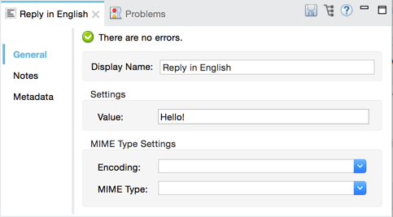This Set Payload transformer sets a payload for the default option you configured above in your choice routing logic.
XML Editor or Standalone
If you model the flow on the canvas, then switch to the XML editor, the placeholder XML for this element as per the following code:
<choice doc:name="Choice">
<when expression="">
<set-payload doc:name="Set Payload"/>
</when>
<when expression="">
<set-payload doc:name="Set Payload"/>
</when>
<otherwise>
<variable-transformer doc:name="Variable"/>
<set-payload doc:name="Set Payload"/>
</otherwise>
</choice>Configure the two when and the otherwise child elements and each of their nested elements as shown.
<choice doc:name="Choice">
<when expression="#[flowVars.language == 'Spanish']">
<set-payload value="Hola!" doc:name="Reply in Spanish"/>
</when>
<when expression="#[flowVars.language == 'French']">
<set-payload value="Bonjour!" doc:name="Reply in French"/>
</when>
<otherwise>
<set-variable variableName="language" value="English" doc:name="Set Language to English"/>
<set-payload value="Hello!" doc:name="Reply in English"/>
</otherwise>
</choice>In each of the when child elements of the choice router, the expression tells Mule to look for a flow variable called language on the incoming message and check whether it equals Spanish or French. If either expression evaluates to true, Mule routes the message to the corresponding nested set-payload message processor.
If both of the expressions in the when elements evaluate to false, Mule routes the message via the processing defining in the otherwise child element. Messages that are routed this way have a variable language=English set, then return a payload in English.
Logger
This logger produces one of three possible messages, depending on the result of the Choice routing.
Studio Visual Editor
Click the Logger to open its Properties Editor, then configure as per the table below.
| Field | Value |
|---|---|
Display Name |
|
Message |
|
Level |
|
XML Editor or Standalone
Configure the logger as follows:
<logger message="The reply "#[payload]" means "hello" in #[flowVars.language]." level="INFO" doc:name="Logger"/>| Field | Value |
|---|---|
message |
|
level |
|
doc:name |
|
Note that Studio automatically escapes the quotes, as per the following:
<logger message="The reply "#[payload]" means "hello" in #[flowVars.language]." level="INFO" doc:name="Logger"/>Save your application by clicking File > Save.
Download the Studio deployable archive for the application.
Running the Application
Having built, configured, and saved your new application, you are ready to run it on the embedded Mule server (included as part of the bundled download of Anypoint Studio).
-
In the Package Explorer pane, right-click the
cbr_tutorialproject, then select Run As > Mule Application. (If you have not already saved, Mule prompts you to save now.) -
Mule immediately kicks into gear, starting your application and letting it run. When the startup process is complete, Studio displays a message in the console that reads,
Started app 'cbr_tutorial'.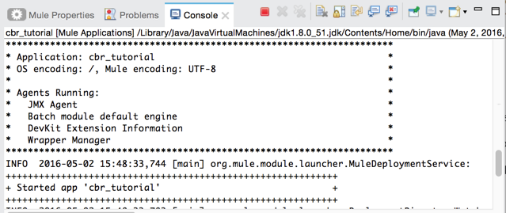
Using the Application
-
Open any Web browser and go to
http://localhost:8081/?language=Spanish -
Your browser presents a message that reads "Hola!"
-
Check the console log in Studio and look for this log message:
INFO 2016-05-02 12:30:28,850 [[cbr_tutorial].connector.http.mule.default.receiver.02] org.mule.api.processor.LoggerMessageProcessor: The reply "Hola!" means "hello" in Spanish.
-
In your browser’s address bar, replace the URL with
http://localhost:8081/?language=French, and press Enter.Your browser presents a message that reads "Bonjour!"
-
Check the console log in Studio again and look for this log message:
INFO 2016-05-02 12:31:50,990 [[cbr_tutorial].connector.http.mule.default.receiver.03] org.mule.api.processor.LoggerMessageProcessor: The reply "Bonjour!" means "hello" in French.
-
Try requesting the URL without a query parameter:
-
Your browser displays a message that reads "Hello!"
-
Check the console log in Studio again and look for this log message:
INFO 2016-05-02 12:40:32,376 [[cbr_tutorial].connector.http.mule.default.receiver.02] org.mule.api.processor.LoggerMessageProcessor: The reply "Hello!" means "hello" in English.
-
This last log message is not terribly interesting or informative. You can fix that in the Extra Credit section, below.
Editing the Running Application
If you make and save changes to your application while it is running, Mule automatically redeploys your application, something that is commonly referred to as "hot deployment".
-
To see this feature in action, add another Logger to the chain of message processors that comprises the default option in the Choice scope.
-
Drag the Logger in front of the two message processors already in the Default box.
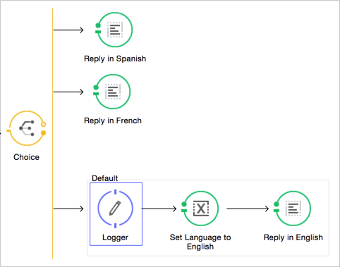Studio Visual Editor
Click the Logger to open its Properties Editor, then configure as per the table below.
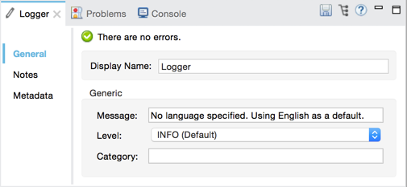Field Value Display Name
LoggerMessage
No language specified. Using English as a default.Level
INFOXML Editor or Standalone
Configure the logger as follows:
Field Value message
No language specified. Using English as a default.level
INFOdoc:name
LoggerThe full code of the choice scope now appears as follows:
... <choice doc:name="Choice"> <when expression="#[flowVars.language == 'Spanish']"> <set-payload value="Hola!" doc:name="Reply in Spanish"/> </when> <when expression="#[flowVars.language == 'French']"> <set-payload value="Bonjour!" doc:name="Reply in French"/> </when> <otherwise> <logger message="No language specified. Using English as a default." level="INFO" doc:name="Logger"/> <set-variable variableName="language" value="English" doc:name="Set Language to English"/> <set-payload value="Hello!" doc:name="Reply in English"/> </otherwise> </choice> ... -
Click the Console tab underneath the canvas to view the running log of your application, then save your application by clicking File > Save.
-
Watch the console and note that Mule redeploys the application immediately.
-
To test this change and verify that your new logger is working, return to your browser and request
http://localhost:8081again. -
Check the console log in Studio and look for this log message:
INFO 2016-05-01 12:48:22,694 [[cbr_tutorial].connector.http.mule.default.receiver.02] org.mule.api.processor.LoggerMessageProcessor: No language specified. Using English as a default.
You have now successfully made a change to your application and performed a hot deployment of the update!
Adding a Subflow
You’ve successfully routed messages in your application via a simple, limited set of options. In this example, the most complex routing option has only three message processors in a chain, but in a more complex application you might have many more message processing steps, possibly with additional branching or routing logic. To keep your code organized and break it into reusable chunks, you can move discrete sections of processing into separate flows or subflows and refer to those flows or subflows with a flow reference component to invoke them when needed.
|
What is the difference between a flow and subflow? Flows and subflows are both constructs within which you link together several individual building blocks to handle the receipt, processing, and routing of a message. For the purposes of this tutorial, you could use either a flow or a subflow to complete the steps below, but in more advanced situations you might need one or the other. A flow has more advanced configuration options, such as the ability to change the processing strategy and define an exception strategy. A subflow always has a synchronous processing strategy and it inherits the exception strategy of the flow from which it is referenced. Both a flow and subflow are invoked using a flow reference component. |
Edit your application to add a subflow and move the processing that currently occurs within the Default box in your Choice Router into the subflow. To do this, you need to add two building blocks to your application:
-
A Flow Reference Component, which invokes another flow in the application. Find this in the Components section of the palette.
-
A Subflow Scope, which creates another flow in your application that you can reference using the above Flow Reference Component. You can find this in the Scopes section of the palette – but using the procedure shown below, Studio adds it for you.
Moving message processors into a subflow is particularly easy to do using Studio’s visual editor.
-
Shift + click the three message processors in the Default box of the Choice scope so that all three are highlighted, then right-click and select Extract to… > Sub Flow.
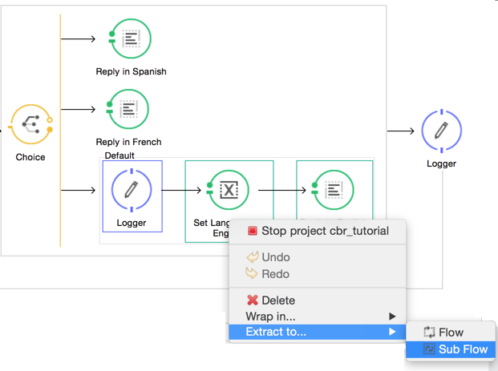 -
Studio prompts you to name your subflow. You can give it any unique name. This example uses the name
CBR_TutorialFlow2. -
Studio creates the subflow underneath your existing flow, replacing the contents of the Default box with a Flow Ref component.
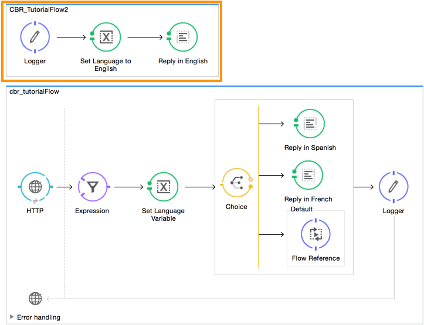
Create a Sub Flow with Drag and Drop
You can also drag and drop to create the sub flow, or use the XML editor.
Add a sub flow scope below your existing flow.
Studio Visual Editor
Drag and drop the Sub Flow scope onto your canvas in the empty space underneath your existing flow.
XML Editor or Standalone
Add a sub flow element beneath your existing flow and before the closing mule tag.
...
</flow>
<sub-flow name="CBR_TutorialFlow2" doc:name="CBR_TutorialFlow2"/>
</mule>Move the two message processors from the default path of your choice router into the new sub flow.
Studio Visual Editor
Drag and drop the message processors into their new positions in the sub flow scope.
XML Editor or Standalone
Copy and paste the code for these three processors into the scope of the sub flow element.
<sub-flow name="CBR_TutorialFlow2" doc:name="CBR_TutorialFlow2">
<logger message="No language specified. Using English as a default." level="INFO" doc:name="Logger"/>
<set-variable variableName="language" value="English" doc:name="Set Language to English"/>
<set-payload value="Hello!" doc:name="Reply in English"/>
</sub-flow>Add a flow reference in the default path of the choice router.
Studio Visual Editor
Drag and drop a Flow Reference Component into the Default box within the Choice scope.
XML Editor or Standalone
Add a flow-ref element as a nested element within the otherwise child element of the choice router.
+
<otherwise>
<flow-ref name="" doc:name="Flow Reference"/>
</otherwise>Configure the flow reference to point to the subflow you just created.
Studio Visual Editor
Click the Flow Reference building block to open its properties tab, then click CBR_TutorialFlow2 from the Flow name drop down menu.
Insert the name of the subflow as the value for the name attribute.
<flow-ref name="CBR_TutorialFlow2" doc:name="Flow Reference"/>Verify the Code
Check that your complete application code now matches the code shown below:
<mule xmlns:http="http://www.mulesoft.org/schema/mule/http" xmlns:tracking="http://www.mulesoft.org/schema/mule/ee/tracking" xmlns="http://www.mulesoft.org/schema/mule/core" xmlns:doc="http://www.mulesoft.org/schema/mule/documentation" xmlns:spring="http://www.springframework.org/schema/beans" xmlns:xsi="http://www.w3.org/2001/XMLSchema-instance" xsi:schemaLocation="http://www.springframework.org/schema/beans http://www.springframework.org/schema/beans/spring-beans-current.xsd
http://www.mulesoft.org/schema/mule/core http://www.mulesoft.org/schema/mule/core/current/mule.xsd
http://www.mulesoft.org/schema/mule/ee/tracking http://www.mulesoft.org/schema/mule/ee/tracking/current/mule-tracking-ee.xsd
http://www.mulesoft.org/schema/mule/http http://www.mulesoft.org/schema/mule/http/current/mule-http.xsd">
<http:listener-config name="HTTP_Listener_Configuration" host="localhost" port="8081" doc:name="HTTP Listener Configuration"/>
<flow name="CBR_TutorialFlow1" doc:name="CBR_TutorialFlow1">
<http:listener config-ref="HTTP_Listener_Configuration" path="/" doc:name="HTTP"/>
<expression-filter expression="#[message.inboundProperties.'http.request.uri' != '/favicon.ico']" doc:name="Expression"/>
<set-variable doc:name="Set Language Variable" value="#[message.inboundProperties.'http.query.params'.language]" variableName="language"/>
<choice doc:name="Choice">
<when expression="#[flowVars.language == 'Spanish']">
<set-payload doc:name="Reply in Spanish" value="Hola!"/>
</when>
<when expression="#[flowVars.language == 'French']">
<set-payload doc:name="Reply in French" value="Bonjour!"/>
</when>
<otherwise>
<flow-ref name="CBR_TutorialFlow2" doc:name="Flow Reference"/>
</otherwise>
</choice>
<logger level="INFO" doc:name="Logger" message="The reply "#[payload]" means "hello" in #[flowVars.language]."/>
</flow>
<sub-flow name="CBR_TutorialFlow2" doc:name="CBR_TutorialFlow2">
<logger message="No language specified. Using English as a default." level="INFO" doc:name="Logger"/>
<set-variable variableName="language" value="English" doc:name="Set Language to English"/>
<set-payload value="Hello!" doc:name="Reply in English"/>
</sub-flow>
</mule>Save your project, and watch the console as it redeploys your changed application.
Repeat the steps in Using the Application, above.
Note that the behavior doesn’t change at all – organizing those three message processors into a subflow and then invoking that flow using a flow-ref has no affect on the functionality of the application. However, as you see in the Extra Credit section below, separating out chunks of processing into subflows can help keep your application code (and its visual representation on the Studio canvas) organized and easy to read. For some realistic use case examples of how you might use multiple flows or subflows to organize your applications, take a look at some of the Mule Examples.
Extra Credit
Now that you know your way around content-based routing in Studio, try applying your knowledge to this extra task:
Revise your application so that an incoming message without an inbound property set to French or Spanish does not automatically default to English, but instead replies in one of three other random languages (your choice!), selected according to a round robin principle.
To achieve this, replace the contents of the subflow that you just created. You need another flow control designed to route incoming messages according to a round robin mechanism, and you need to define three possible processing branches within the scope of the round robin flow control. In each of those three processing branches, set a language property and set the payload to respond in the language that you select.
Use the hints below if you need help.
Hints
|
How do I add round robin logic to my application?
Use the Round Robin flow control to add round robin logic to your application. Find this processor in the Flow Control section of the palette, or add a round-robin element into your XML.
How do I define options for a round robin mechanism?
In the visual editor, within the dotted line illustrating the scope of the Round Robin flow control, drag and drop three Variable Transformers. As you did above with the Choice flow control, position your mouse so that a vertical black line appears to create additional routing options. After each Variable Transformer, add a Set Payload Transformer.
Or, in the XML editor, nest three set-variable elements below the round-robin element. Add a set-payload element immediately after each set-variable. In order to instruct Mule that the set-payload transformer that follows each set-variable transformer should be the next step of processing rather than a different round robin option, wrap each set-variable and set-payload pair in a processor-chain tag, like this:
How do I configure additional language responses?
Do exactly what you did when you configured the default option in the Choice Router and Constituent Message Processors, above, only with different languages.
Answer
|
There is more than one way to achieve the goals outlined above, but here is the fastest way:
-
Drag a Round Robin router into the subflow, as shown.
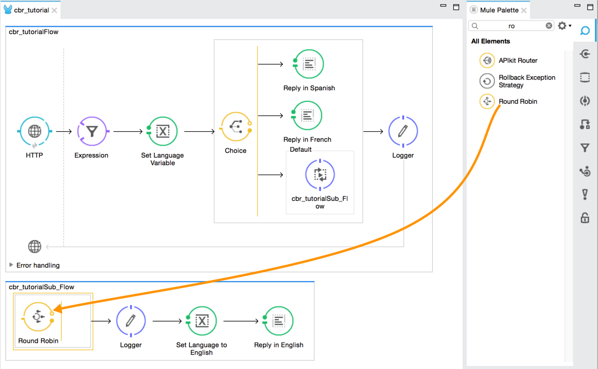 -
Drag the existing three message processors into the Round Robin scope, as shown.
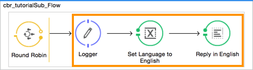 -
Switch to the Configuration XML tab to edit in XML.
-
Highlight the portion of the code wrapped in
processor-chaintags and copy it to your clipboard: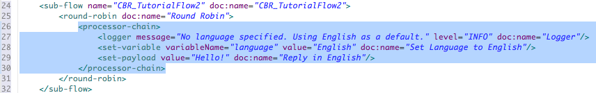The code is:
<processor-chain> <logger message="No language specified. Using English as a default." level="INFO" doc:name="Logger"/> <set-variable variableName="language" value="English" doc:name="Set Language to English"/> <set-payload value="Hello!" doc:name="Reply in English"/> </processor-chain> -
Press enter to start a new line, then paste the code twice to create three sets of processor chains.
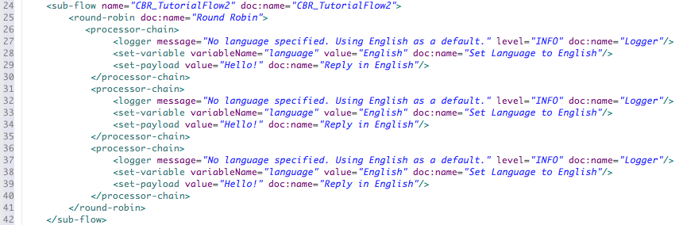The Round Robin code is now:
<round-robin doc:name="Round Robin"> <processor-chain> <logger message="No language specified. Using English as a default." level="INFO" doc:name="Logger"/> <set-variable variableName="language" value="English" doc:name="Set Language to English"/> <set-payload value="Hello!" doc:name="Reply in English"/> </processor-chain> <processor-chain> <logger message="No language specified. Using English as a default." level="INFO" doc:name="Logger"/> <set-variable variableName="language" value="English" doc:name="Set Language to English"/> <set-payload value="Hello!" doc:name="Reply in English"/> </processor-chain> <processor-chain> <logger message="No language specified. Using English as a default." level="INFO" doc:name="Logger"/> <set-variable variableName="language" value="English" doc:name="Set Language to English"/> <set-payload value="Hello!" doc:name="Reply in English"/> </processor-chain> </round-robin> -
Edit the attributes for the three routing options you have created to set three new language variables and respond with payloads in those languages. Edit the loggers to match. For example:
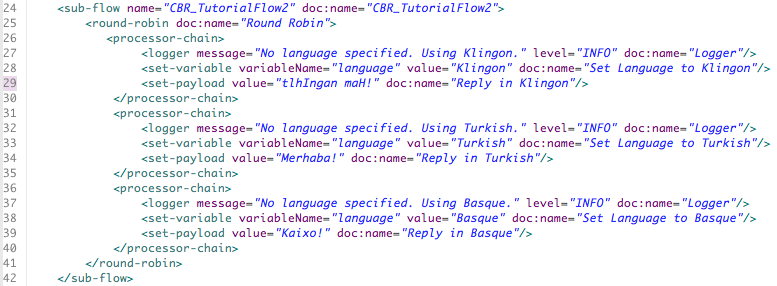The updated code for this example is:
<round-robin doc:name="Round Robin"> <processor-chain> <logger message="No language specified. Using Klingon." level="INFO" doc:name="Logger"/> <set-variable variableName="language" value="Klingon" doc:name="Set Language to Klingon"/> <set-payload value="tlhIngan mah!" doc:name="Reply in Klingon"/> </processor-chain> <processor-chain> <logger message="No language specified. Using Turkish." level="INFO" doc:name="Logger"/> <set-variable variableName="language" value="Turkish" doc:name="Set Language to Turkish"/> <set-payload value="Merhaba!" doc:name="Reply in Turkish"/> </processor-chain> <processor-chain> <logger message="No language specified. Using Basque." level="INFO" doc:name="Logger"/> <set-variable variableName="language" value="Basque" doc:name="Set Language to Basque"/> <set-payload value="Kaixo!" doc:name="Reply in Basque"/> </processor-chain> </round-robin>In the visual editor, the subflow looks like this:
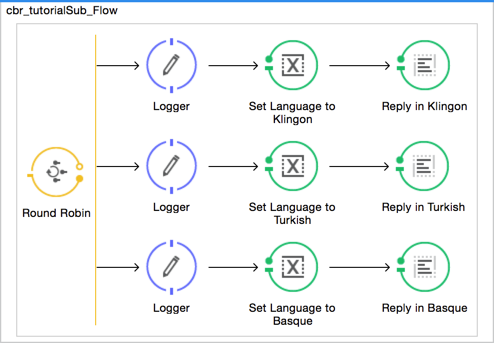 -
Save the application again, wait for the redeployment to complete, and observe the results when you repeatedly visit
http://localhost:8081without specifying either French or Spanish using a query parameter. -
Examine the Console messages. You should see messages that end with:
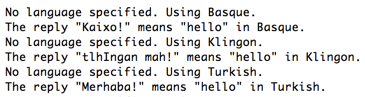
Congratulations! You earned your extra credit. You’re all set to go on to the Anypoint Connector quickstart.
View the code of the revised application:
<?xml version="1.0" encoding="UTF-8"?>
<mule xmlns:http="http://www.mulesoft.org/schema/mule/http" xmlns:tracking="http://www.mulesoft.org/schema/mule/ee/tracking" xmlns="http://www.mulesoft.org/schema/mule/core" xmlns:doc="http://www.mulesoft.org/schema/mule/documentation"
xmlns:spring="http://www.springframework.org/schema/beans"
xmlns:xsi="http://www.w3.org/2001/XMLSchema-instance"
xsi:schemaLocation="http://www.springframework.org/schema/beans http://www.springframework.org/schema/beans/spring-beans-current.xsd
http://www.mulesoft.org/schema/mule/core http://www.mulesoft.org/schema/mule/core/current/mule.xsd
http://www.mulesoft.org/schema/mule/http http://www.mulesoft.org/schema/mule/http/current/mule-http.xsd
http://www.mulesoft.org/schema/mule/ee/tracking http://www.mulesoft.org/schema/mule/ee/tracking/current/mule-tracking-ee.xsd">
<http:listener-config name="HTTP_Listener_Configuration" host="localhost" port="8081" doc:name="HTTP Listener Configuration"/>
<flow name="cbr_tutorialFlow">
<http:listener config-ref="HTTP_Listener_Configuration" path="/" doc:name="HTTP"/>
<expression-filter expression="#[message.inboundProperties.'http.request.uri' != '/favicon.ico']" doc:name="Expression"/>
<set-variable doc:name="Set Language Variable" value="#[message.inboundProperties.'http.query.params'.language]" variableName="language"/>
<choice doc:name="Choice">
<when expression="#[flowVars.language == 'Spanish']">
<set-payload doc:name="Reply in Spanish" value="Hola!"/>
</when>
<when expression="#[flowVars.language == 'French']">
<set-payload doc:name="Reply in French" value="Bonjour!"/>
</when>
<otherwise>
<flow-ref name="cbr_tutorialSub_Flow" doc:name="cbr_tutorialSub_Flow"/>
</otherwise>
</choice>
<logger level="INFO" doc:name="Logger" message="The reply "#[payload]" means "hello" in #[flowVars.language]."/>
</flow>
<sub-flow name="cbr_tutorialSub_Flow">
<round-robin doc:name="Round Robin">
<processor-chain>
<logger message="No language specified. Using Klingon." level="INFO" doc:name="Logger"/>
<set-variable variableName="language" value="Klingon" doc:name="Set Language to Klingon"/>
<set-payload value="tlhIngan mah!" doc:name="Reply in Klingon"/>
</processor-chain>
<processor-chain>
<logger message="No language specified. Using Turkish." level="INFO" doc:name="Logger"/>
<set-variable variableName="language" value="Turkish" doc:name="Set Language to Turkish"/>
<set-payload value="Merhaba!" doc:name="Reply in Turkish"/>
</processor-chain>
<processor-chain>
<logger message="No language specified. Using Basque." level="INFO" doc:name="Logger"/>
<set-variable variableName="language" value="Basque" doc:name="Set Language to Basque"/>
<set-payload value="Kaixo!" doc:name="Reply in Basque"/>
</processor-chain>
</round-robin>
</sub-flow>
</mule>Stopping the Application
To stop the application, click the red, square Terminate icon above the console.
See Also
-
NEXT STEP: Test yourself with the next, slightly more complex Anypoint Connector quickstart.
-
Want to learn more about Mule Expression Language (MEL)? Check out the complete reference.
-
Get a deeper explanation about the Mule message and anatomy of a Mule application.